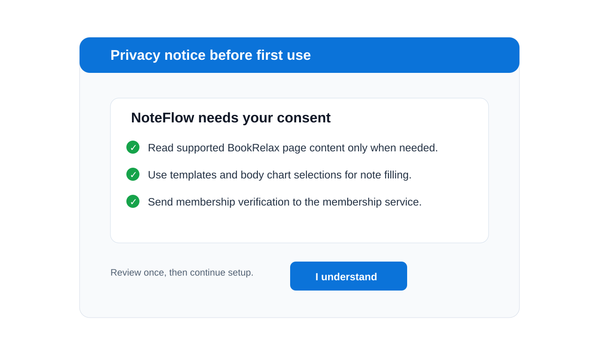
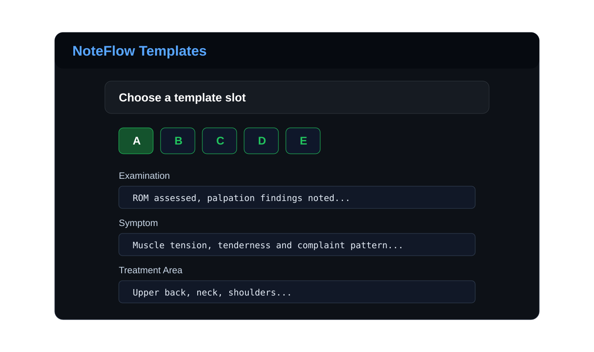
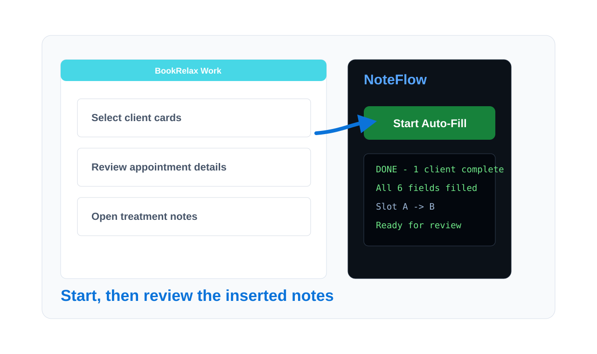

Welcome to NoteFlow
Follow these steps after installing NoteFlow to prepare treatment-note auto-fill for BookRelax.
This page is a visual setup guide for new users. NoteFlow is independent and is not affiliated with or endorsed by BookRelax.
Step 1: Pin NoteFlow
First, look for the NoteFlow icon in your Chrome toolbar.

Click the puzzle-piece icon, find NoteFlow, and pin it. This makes the extension available while you are working inside BookRelax.
Step 2: Open BookRelax
Go to your supported BookRelax practitioner Work page.

NoteFlow is designed for the BookRelax treatment-note workflow and only needs to run on supported mybookrelax.com pages.
Step 3: Review Privacy
Confirm the privacy notice before using auto-fill features.

The extension may read supported BookRelax page content needed for treatment-note generation. License verification is handled separately through the license service.
Step 4: Set Templates
Prepare your treatment-note templates in slots A to E.

Set up wording for Examination, Symptom, Treatment Area, Treatment Method, Outcome, and Comment. You can keep different templates for different session styles.
Step 5: Start Auto-Fill
Click Start Auto-Fill from the Work page when you are ready.

Need Help?
For support, contact supportnoteflow.app@gmail.com.